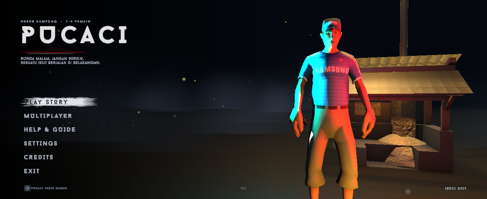
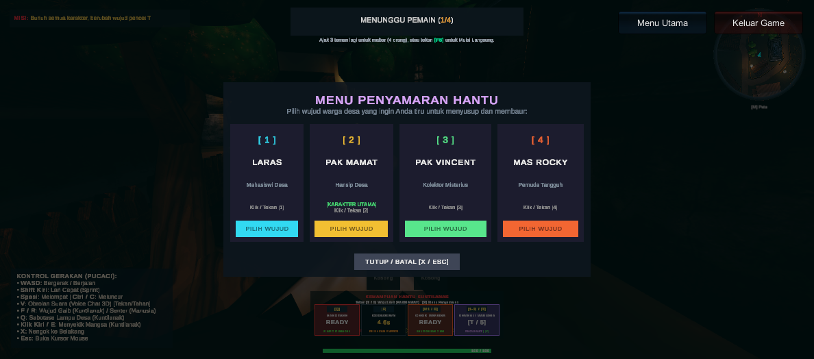
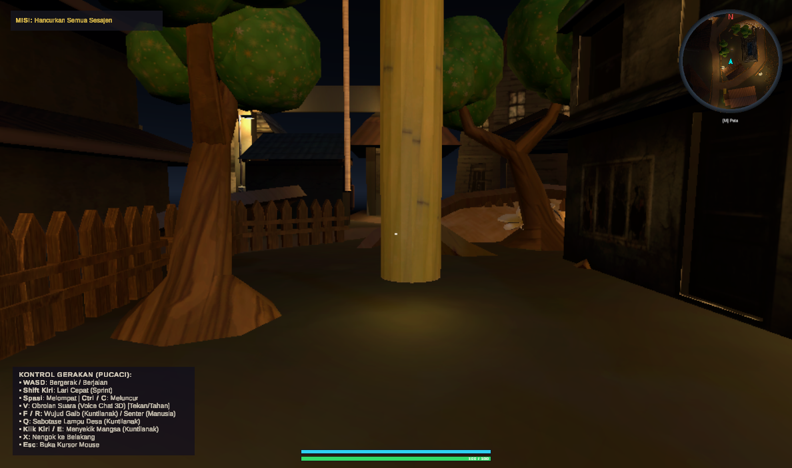
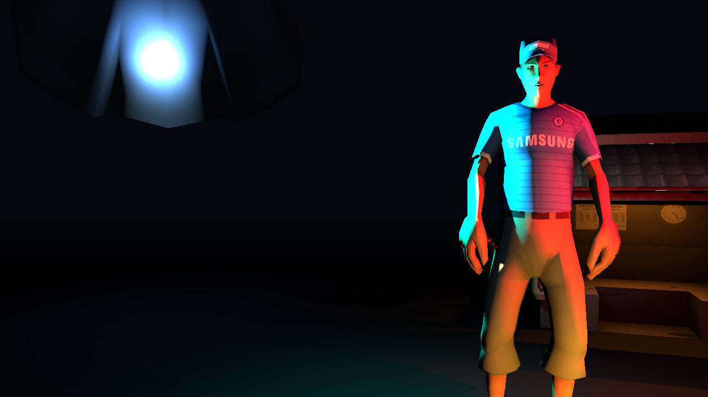
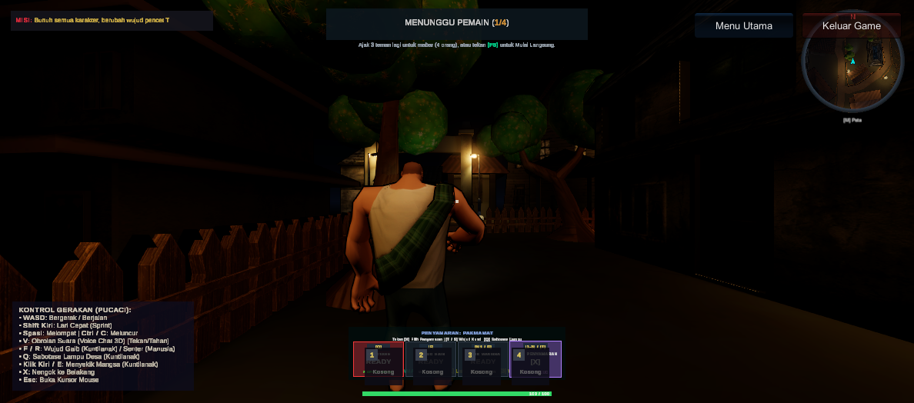

Bertahan hidup bersama warga ronda malam di Desa Sukamaju, atau menyusup diam-diam sebagai Kuntilanak dalam perburuan deduksi sosial multiplayer yang mencekam sekaligus menghibur.


PUCACI adalah game horor-komedi kooperatif 4 pemain yang berlatar di perkampungan malam Indonesia. Malam ini giliran ronda Desa Sukamaju menjadi petaka ketika sesajen terlarang tersebar dan arwah pohon beringin mulai merasuki salah satu warga.
Pemain terbagi menjadi dua peran berlawanan: Tim Warga yang harus saling menjaga, membersihkan sesajen, dan menghidupkan gardu sekring desa, serta Kuntilanak yang menyamar persis seperti salah satu warga untuk menyabotase rombongan dari dalam.
Komunikasi suara berdasarkan jarak fisik di dalam game—jeritan kepanikan di lorong gelap terdengar sangat nyata.
Kuntilanak dapat meniru wujud visual warga mana pun seketika untuk mengecoh rekan dan memecah kelompok.

Game berjalan secara portabel tanpa instalasi rumit. Cukup hubungkan komputer Windows Anda dan rekan dalam satu jaringan Wi-Fi/LAN yang sama atau gunakan VPN virtual (Radmin / Hamachi / ZeroTier).
Download arsip Pucaci-v1.0-Windows.zip (~76.8 MB) dan ekstrak foldernya di PC.
Buka berkas permainan dan pilih karakter warga yang diinginkan di menu utama.
Satu pemain klik Host Room, pemain lain memasukkan alamat IP Host lalu klik Gabung.
Tahan tombol [V] untuk Push-To-Talk Voice Chat, [X] untuk menyamar, dan [ESC] untuk opsi.
Diproduksi dengan Unity 2022 LTS dan Universal Render Pipeline (URP), menghadirkan visual kartun ber-outline tebal yang ringan namun sarat atmosfer malam pedesaan.
Suara teman mengecil saat mereka menjauh dan membesar saat mendekat. Jeritan saat dikejar terasa realistis.
Temukan dan bersihkan sesajen berasap mistis di berbagai sudut pekarangan desa sebelum malam larut.
Gaya gambar kartunis dengan garis luar tegas menciptakan perpaduan estetika horor dan komedi yang unik.
Kustomisasi volume kanal audio (Master, Musik, SFX), sensitivitas mouse, kualitas grafis, dan mode layar penuh.
Pratinjau visual langsung dari build resmi PUCACI v1.0. Klik gambar untuk melihat pratinjau penuh.


Setiap pemain dapat memilih karakter warga favoritnya saat berada di lobi room permainan.
Sesepuh kampung yang paling hafal seluruh sudut dan jalan pintas desa. Dilengkapi senter sorot berjarak jauh.
Pemuda desa dengan kelincahan gerak tinggi, sangat efektif untuk menjangkau titik sesajen yang terisolasi.
Warga berbadan tegap yang bertanggung jawab memulihkan gardu sekring desa saat listrik disabotase.
Warga yang memiliki kejelian tinggi dalam mendeteksi keberadaan asap sesajen serta kejanggalan rekan tim.
Arwah penunggu pohon beringin yang menyusup ke tengah warga. Mampu menyamar [X], mematikan gardu listrik, dan mengeliminasi warga yang tersesat di kegelapan.
PUCACI dioptimasi secara spesifik agar dapat dimainkan dengan lancar pada laptop harian hingga komputer desktop.
| Komponen | Spesifikasi Minimum | Spesifikasi Rekomendasi |
|---|---|---|
| Sistem Operasi | Windows 10 / 11 (64-bit) | Windows 10 / 11 (64-bit) |
| Prosesor (CPU) | Intel Core i3-4150 / AMD FX-6300 | Intel Core i5-8400 / AMD Ryzen 5 2600 |
| Memori (RAM) | 4 GB RAM | 8 GB RAM atau lebih tinggi |
| Kartu Grafis (GPU) | Intel HD Graphics 4000 / NVIDIA GT 730 | NVIDIA GTX 1050 Ti / AMD RX 560 |
| DirectX | Versi 11 | Versi 11 / 12 |
| Penyimpanan | 300 MB ruang kosong | 500 MB ruang kosong (SSD) |